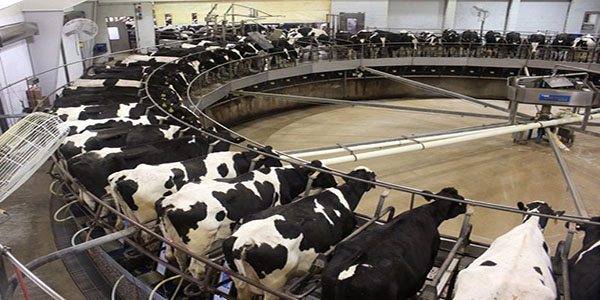

Animal Cruelty
Animal cruelty in the agriculture industry
Factory farming has been attributed to the main cause and largest amount of animal cruelty and abuse.
The number of livestock slaughtered each year for production of meat is over eight times the global human population. Today, more animals than ever before in history have been subject to this suffering. Before slaughter, animals are typically plumped up and/or used to contribute by-products such as milk. Typical conditions of these barns are extreme. Most babies that are born into factory farms never get to meet their mothers or see the outside world with the exception of their ride to the slaughterhouse. These animals are kept in windowless buildings, in tight spaces unallowing them space to move around. There is no specified standard of size of enclosure for factory farm animals. These animals are exposed to extreme high and low temperatures.
We have linked more in-depth information on the meat and dairy industries located here.
Animal cruelty in the fashion industry
Humans also utilize animals for fashion. Animals such as fox, sheep, cows, and more are subject to horrible conditions in order to produce fur, wool, and leather. Billions of these animals are subject to slaughter each year around the world. These animals are also kept in farms, sometimes called fur farms. Cows raised for leather production are one of the biggest instances of animal based clothing. Leather is used in a variety of different products, such a jackets, purses, boots, and gloves. These cows are typically hung to death in order to drain the blood before workers skin them. Sheep are subject to having their coats sheared down in all months, exposing them to cold where many perish due to harsh temperatures.
Cosmetics is another industry that contributes to animal abuse. Animal testing began in the 1940s as a way to practice methods and ingredients in order to test questionable products. The products include lipstick, shampoo, mascara and cologne. The animals typically used for cosmetic testing include abbits, guinea pigs, and mice, and typically around 500,000 of these animals are subjected to testing each year. The animals sometimes have reactions, and are not provided with any sort of relief. At the end of their round of testing, they are always killed.
Today, there are a variety of cruelty free options available in botht the clothing and cosmetic industry. Companies have produced items without the need for testing on animals, and synthetic fabrics are becoming increasingly popular.
We have linked more information on the cruelty imposed on animals by the fashion industry here.